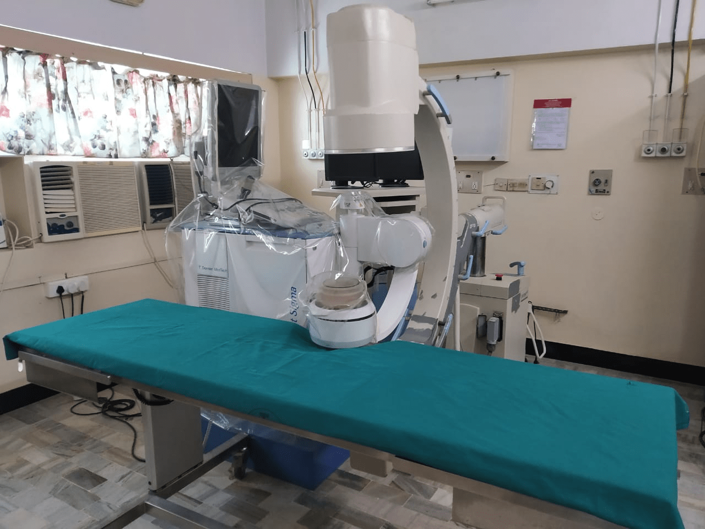

TREATMENT FOR URINARY TRACT STONE
EXTRACORPOREAL SHOCK WAVE LITHOTRIPSY :
HITECH DORNIER ESWL LITHO TRIPITOR
Extra Corporeal shock wave Litho Tripsy is one of the most popular Modality of Treatment for Renal & Upper Ureteric Calculus, We have one of the best & most Sophisticated Dornier( German ) Lithotripter. Advantages of this high end Lithotripter are
- Least Tissue Damage
- Very High Stone Clearance Rate
- Least painful, no Anaesthesia required, only Children & few Apprehensive
Patients require Anaesthesia.
- This Machine has both Fuoroscopy & Ultra Sound Modality to Focus the
Stone, even non Radio Opaque Calculus can be fragmented with Ultra
Sound Guidance.
ESWL ROOM

S.B Hospital has the Longest experience with this high tech successful treatment for kidney stones.
With an advanced Dorniere machine (Ultrasound and Fluroscopy) guided, shockwaves are sent in to the urinary tract, focussed on to the stone and the stones are broken in to small pieces which are usually passed out in the urine. usually this stone breaking procedure is done without anaesthesia and in such cases there will be no need for admision in to the hospital. Patient can go home and return to work within a day or two. very rarely multiple sittings of this stone breaking may be required if the stones are very hard. Some times if there are are areas of obstruction or narrowing in the urinary tract these broken bit may require removal through endoscopic procedures. Sometimes, follow up placing of stents in the ureter may be required. In such patients these stents are removed within a few days or in a few weeks depending on the severity of obstruction and also the status of the kidney function
Ureteroscopy and Laser Stone Breaking

X-Ray With Stones In Both Kidneys And A Large One In The Left Ureter Before ESWL

Same Patient Post ESWL, Post “DJ” Stent Removal X Ray With Total Clearance Of Stone From Both Kidney.